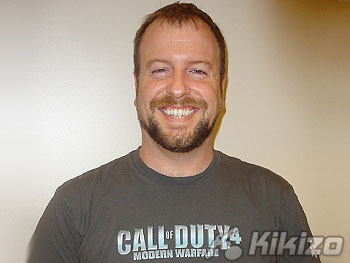
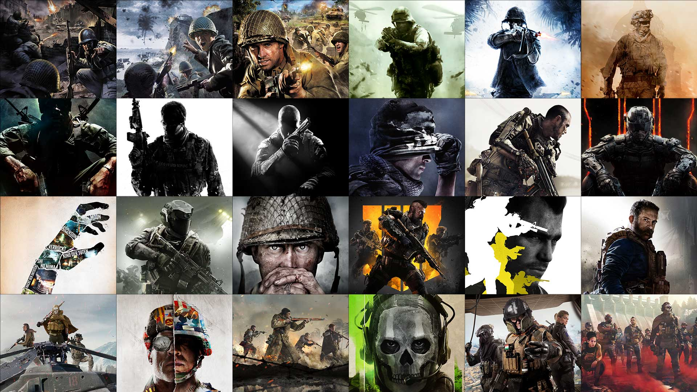
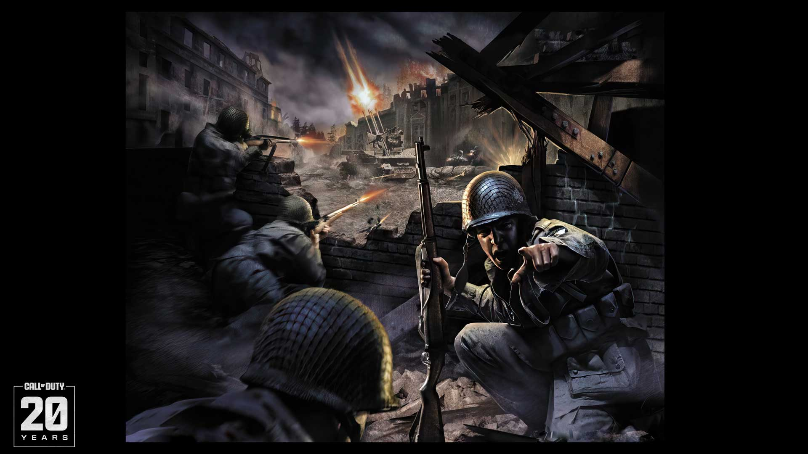

Vince Zampella


Você já deve ter ouvido falar de Call of Duty ou mesmo já deve ter jogado esse jogo na casa de alguém, nesse site vamos falar da trajetória desse jogo. Você tambêm verá a ordem, nome, história e objetivo de cada lançamento, então se você é fã de verdade continue lendo esse artigo e se aprofunde mais no conhecimento desse universo gamer, boa leitura!
Call of Duty foi criado pela Infinity Ward em 2002, um estúdio fundado por ex-desenvolvedores de Medal of Honor: Allied Assault. Os principais líderes e cocriadores foram Vince Zampella, Grant Collier e Jason West, com o jogo lançado pela Activision em 2003.Os principais criadores de Call of Duty em 2003 foram os fundadores da estúdio Infinity Ward, com destaque para Vince Zampella, Jason West e Grant Collier. A equipe, composta por ex-desenvolvedores de Medal of Honor: Allied Assault (da 2015, Inc.), foi financiada pela Activision para criar um novo jogo de tiro focado em esquadrões da Segunda Guerra Mundial.

| Período Histórico | Contexto | Nome do jogo | Trailer do jogo | Data de Lançamento |
|---|---|---|---|---|
| 2° Guerra Mundial. | Focado na experiência cinematográfica de soldados "comuns" dos Aliados. | Call of Duty | ▶ Assista | 29 de outubro de 2003 |
| Focada em momentos críticos da Segunda Guerra Mundial, incluindo a Batalha das Ardenas, a invasão da Sicília e a Batalha de Kursk. | Call of Duty: United Offensive | ▶ Assista | 14 de setembro de 2004 | |
| Foca intensamente em narrar batalhas decisivas da Segunda Guerra Mundial sob a perspectiva de diferentes soldados Aliados, destacando o drama humano e a escala épica dos confrontos. | Call of Duty: Finest Hour | ▶ Assista | 16 de novembro de 2004 | |
| Diferente de jogos mais recentes, ele foca na experiência clássica do conflito global, narrado através de três campanhas distintas que mostram a perspectiva de diferentes aliados. | Call of Duty 2 | ▶ Assista | 25 de outubro de 2005 | |
| Focado na campanha da 1ª Divisão de Infantaria americana ("The Big Red One"). O jogador acompanha Roland Roger, vivenciando batalhas no Norte da África, Sicília e a marcha final para a Alemanha. | Call of Duty 2: Big Red One | ▶ Assista | 1 de novembro de 2005 | |
| Focando especificamente na Campanha da Normandia logo após o desembarque do Dia D, em 1944. | Call of Duty 3 | ▶ Assista | 7 de novembro de 2006 | |
| Envolve campanhas americanas, canadenses e britânicas, com destaque para a invasão na Itália (Operation Avalanche) e a batalha na Normandia. | Call of Duty: Roads to Victory | ▶ Assista | 13 de março de 2007 | |
| Conflito geopolítico moderno fictício. | envolve uma guerra civil russa, um golpe de estado no Oriente Médio e a ameaça de armas nucleares, colocando forças especiais do Reino Unido (SAS) e fuzileiros navais dos EUA (USMC) contra ultranacionalistas. | Call of Duty 4: Modern Warfare | ▶ Assista | 5 de novembro de 2007 |
| Final da 2° Guerra Mundial. | Ambientado nos momentos finais da Segunda Guerra Mundial, o jogo foca no Pacífico (2ª Divisão de Fuzileiros Navais) e em campanhas ocidentais na Europa (frentes britânica e americana). | Call of Duty: World at War/World at War-Final Fronts | ▶ Assista | 10 e 11 de novembro de 2008 |
| Cenário fictício de guerra global iniciado por um grupo ultranacionalista russo. | Foca em traições, manipulação política pelo General Shepard, e a busca por Makarov ao redor do mundo (incluindo cenas icônicas no Brasil). | Call of Duty: Modern Warfare 2 | ▶ Assista | 10 de novembro de 2009 |
| Segunda Guerra Mundial (anos 1940), focado em experimentos alemães secretos. | A trama gira em torno da Divisão 935 (Group 935), uma organização alemã liderada pelo Dr. Edward Richtofen, que usava o Elemento 115 para criar zumbis, teletransportar matéria e criar armas de raios (Wunderwaffe DG-2, Ray Gun). | Call of Duty: World at War-Zombies | ▶ Assista | 16 de novembro de 2009 |
| Mistura de ficção com Guerra Fria. | Operações "Black Ops": Missões secretas atrás das linhas inimigas realizadas por Mason, Woods e Hudson. | Call of Duty:Black Ops | ▶ Assista | 9 de novembro de 2010 |
| 3° Guerra Mundial entre EUA e Rússia. | O foco é a caçada ao terrorista Vladimir Makarov por Price e Soap, passando por cenários globais destruídos como Nova York, Londres e Paris, culminando na eliminação de Makarov em Dubai. | Call of Duty: Modern Warfare 3 | ▶ Assista | 8 de novembro de 2011 |
| Mistura de ficção com Guerra Fria. | Continuando a trama iniciada em World at War. A narrativa mistura conspirações científicas nazistas com elementos sobrenaturais, envolvendo viagens no tempo e o controle de mortos-vivos. | Call of Duty: Black Ops-Zombies | ▶ Assista | 1 de dezembro de 2011 |
| Mistura de elementos dos outros jogos, principalmente da era Modern Warfare até Black Ops 2. | Foi uma grande mistura ("remix") de conteúdos, mapas, armas e personagens de vários jogos anteriores da franquia,e é marcado pela estratégia da Activision de expandir sua franquia de sucesso para o mercado chinês, o maior consumidor de jogos online do mundo na época. | Call of Duty: Online | ▶ Assista | 28 de setembro de 2012 |
| Alterna entre Guerra Fria anos 80 e um futuro distópico (2025). | Foca em David Mason caçando o vilão Raul Menendez, que lidera a "Cordis Die", uma organização com um bilhão de seguidores que usa tecnologia de ponta e drones contra os EUA. | Call of Duty: Black Ops 2 | ▶ Assista | 13 de novembro de 2012 |
| Ficção futurista que se passa em 2020. | Após o colapso econômico global, os EUA enfrentam um inimigo desconhecido, e o jogador comanda uma equipe de elite de Operações Especiais para conter o terrorismo global. | Call of Duty: Strike Team | ▶ Assista | 5 de setembro de 2013 |
| Cenário futurista distópico, por volta de 2017 (10 anos antes do evento principal), a maior parte da campanha ocorre no ano de 2027. | Situa-se num cenário pós-apocalíptico de distopia, onde, após a destruição do Oriente Médio, a América do Sul se unifica na "Federação", uma superpotência que domina o continente americano. | Call of Duty: Ghosts | ▶ Assista | 5 de novembro de 2013 |
| Enredo ficcional que se passa no ano de 2054. | Você controla Jack Mitchell, um fuzileiro naval dos EUA que perde o braço e seu melhor amigo em uma missão na Coreia do Sul em 2054. Após ser recrutado pela Atlas, ele usa uma prótese avançada e exoesqueletos para lutar em um mundo onde a guerra é privatizada. | Call of duty: Advanced Warfare | ▶ Assista | 3 de novembro de 2014 |
| O jogo não se passa em uma única época. Ele funciona como um "crossover" ou celebração dos personagens mais icônicos da franquia até 2014. | Os jogadores comandam uma base, treinam unidades e utilizam heróis para ataques, com suporte de "Killstreaks" famosos, como o Míssil Predator, Chopper Gunner e EMP. | Call of Duty: Heroes | ▶ Assista | 26 de novembro de 2014 |
| Ambientado em um futuro sombrio de 2065, focado em soldados cibernéticos. | O jogo combina campanha cooperativa, multijogador intenso e o aclamado modo Zumbis, com a edição Zombies Chronicles oferecendo 8 mapas remasterizados clássicos. | Call of Duty: Black Ops 3 | ▶ Assista | 6 de novembro de 2015 |
| A maior parte da história ambientada por volta do ano 2187, embora a narrativa englobe eventos que ocorrem ao longo de vários anos. | O conflito principal envolve a Settlement Defense Front (SDF), uma facção fascista e radical composta por colônias insurgentes que se separaram da UNSA anos antes. A SDF é liderada pelo Almirante Salen Kotch e deseja controlar todo o Sistema Solar, enxergando a Terra como um alvo. | Call of Duty:Infinite Warfare | ▶ Assista ▶ Assista | 14 de outubro/4 de novembro de 2016 |
| Final da Segunda Guerra Mundial na Europa | Diferente de outros jogos da franquia focados em super-heróis, COD: WWII busca retratar os horrores da guerra de forma mais visceral e humana, focando nos laços entre o Esquadrão Daniels. | Call of Duty:WWII | ▶ Assista | 3 novembro de 2017 |
| É ambientado na metade dos anos 2040 (aproximadamente 2045), situando-se cronologicamente entre os eventos de Black Ops II (2025) e Black Ops III (2065). | A trama foca no treinamento de um grupo de soldados de elite (os Especialistas), contratados por Savannah Mason-Meyer, neta de Alex Mason (protagonista dos jogos anteriores), para se prepararem para uma ameaça global futura não revelada. | Call of Duty: Black Ops 4 | ▶ Assista | 12 de outubro de 2018 |
| Frequentemente associado ao ano de 2038. | O contexto foca no combate tático em ritmo acelerado, com modos multijogador 5v5 e um Battle Royale no mapa Isolado, focado em alta movimentação. | Call of Duty: Mobile | ▶ Assista | 1 de outubro de 2019 |
| Tempos modernos em 2019. | O contexto envolve operações secretas da CIA, forças especiais britânicas e rebeldes do Urziquistão (país fictício) para recuperar armas químicas roubadas pela organização Al-Qatala. | Call of Duty: Modern Warfare | ▶ Assista | 25 de outubro de 2019 |
| Segunda Guerra Mundial em 1944 | Os jogadores lutam na ilha onde forças alemãs estariam desenvolvendo uma arma química chamada "Nebula V". | Call of Duty: Warzone Caldera | ▶ Assista | 10 de março de 2020 |
| Início dos anos 1980 (principalmente 1981), durante a Guerra Fria | A campanha foca em uma caçada global ao espião soviético Perseus, passando por locais como Berlim Oriental, Vietnã, Turquia e Moscou, com foco em espionagem, conspirações e eventos inspirados em fatos reais. | Call of Duty:Black Ops Cold War | ▶ Assista | 13 de novembro de 2020 |
| Final da Segunda Guerra Mundial (1945). | A campanha narra histórias de soldados de diferentes nacionalidades em quatro frentes (Europa Oriental/Ocidental, Pacífico e Norte da África). | Call of Duty: Vanguard | ▶ Assista | 5 de novembro de 2021 |
| Conflito militar fictício que se passa em 2022. | A história se passa em locais como México, Afeganistão e Estados Unidos, abordando traições militares, operações secretas e combate ao terrorismo em um cenário geopolítico tenso e fictício. | Call of Duty: Modern Warfare 2 | ▶ Assista | 28 de outubro de 2022 |
| Período contemporâneo em 2023. | Guerra moderna e fictícia, focada em operações especiais, terrorismo global e conflito com o vilão Vladimir Makarov. | Call of Duty: Modern Warfare 3 | ▶ Assista | 10 de novembro de 2023 |
| Época contemporânea/moderna (guerra moderna), não sendo focado em um período histórico passado. | Trata-se de um "shooter" em primeira pessoa focado em combate tático moderno, apresentando tecnologia, armas e equipamentos atuais. | Call of Duty: Warzone Mobile | ▶ Assista | 21 de março de 2024 |
| Fim da Guerra Fria (1990/1991). | Retrata o mundo após a dissolução da União Soviética, onde os EUA emergem como a única superpotência. A trama envolve espionagem e conspirações contra uma organização paramilitar chamada "Pantheon", que se infiltrou na CIA. | Call of Duty: Black Ops 6 | ▶ Assista | 25 de outubro de 2024 |
| Passa-se em 2035, dez anos após os eventos de Black Ops II (2025) e 44 anos após Black Ops 6. | O jogo aborda um cenário futurista de "guerras psicológicas", onde David Mason lidera o JSOC contra uma ameaça que usa drones e o medo, em uma trama conectada ao legado de Raul Menendez | Call of Duty: Black Ops 7 | ▶ Assista | 14 de novembro de 2025 |

Você sabe a história por trás dessa grande franquia de jogos? Sabe como era os gráficos do primeiro Call of Duty? Como era a jogabilidade? Se não sabe vamos te contar agora,Lançado em 2003 pela Infinity Ward e Activision, o primeiro Call of Duty revolucionou os jogos de tiro ao focar intensamente em combates realistas da Segunda Guerra Mundial. Com uma narrativa imersiva, o jogo destaca as campanhas americana, britânica e soviética, culminando na batalha final em Berlim. Pontos principais da história e desenvolvimento: Foco na Segunda Guerra: O jogo simula eventos icônicos, como o Dia D (paraquedistas) e batalhas em Stalingrado. Narrativa Dividida: Os jogadores assumem papéis de diferentes soldados aliados, incluindo o soldado Martin (EUA), Sargento Evans (Reino Unido) e Alexei Voronin (União Soviética). O Início de Tudo: Criado para superar Medal of Honor, o jogo introduziu um estilo cinematográfico com jogabilidade fluida. Expansão: O jogo recebeu a expansão United Offensive, que complementa a narrativa clássica.O sucesso do título original lançou as bases para uma das franquias mais lucrativas e influentes da história dos videogames.
Desculpa professora, mas não consegui fazer essa legenda do jeito certo,espero que aceite, já tentei de tudo aqui.